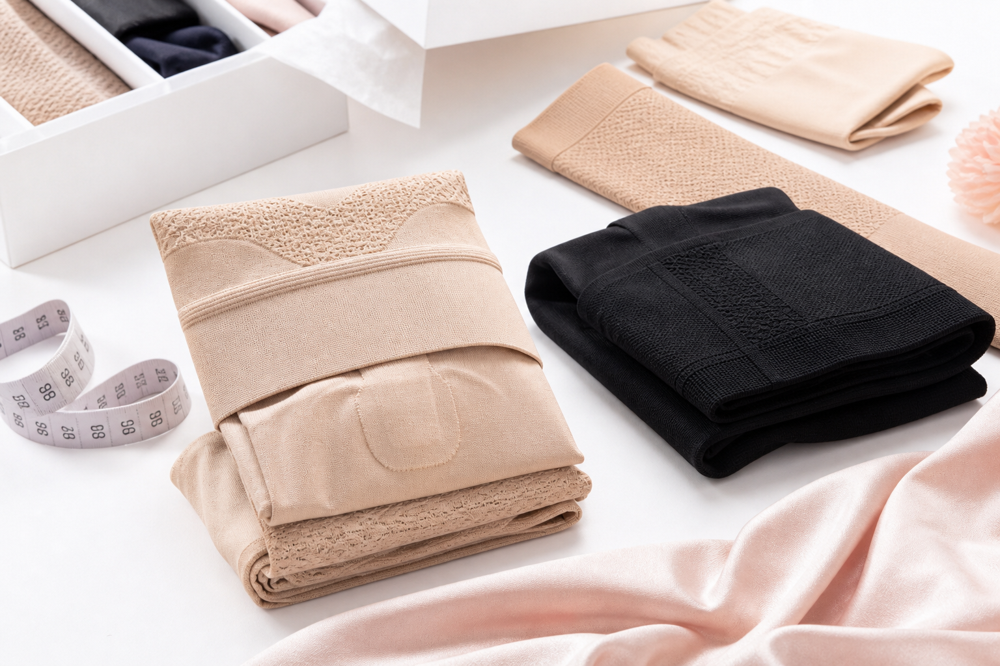
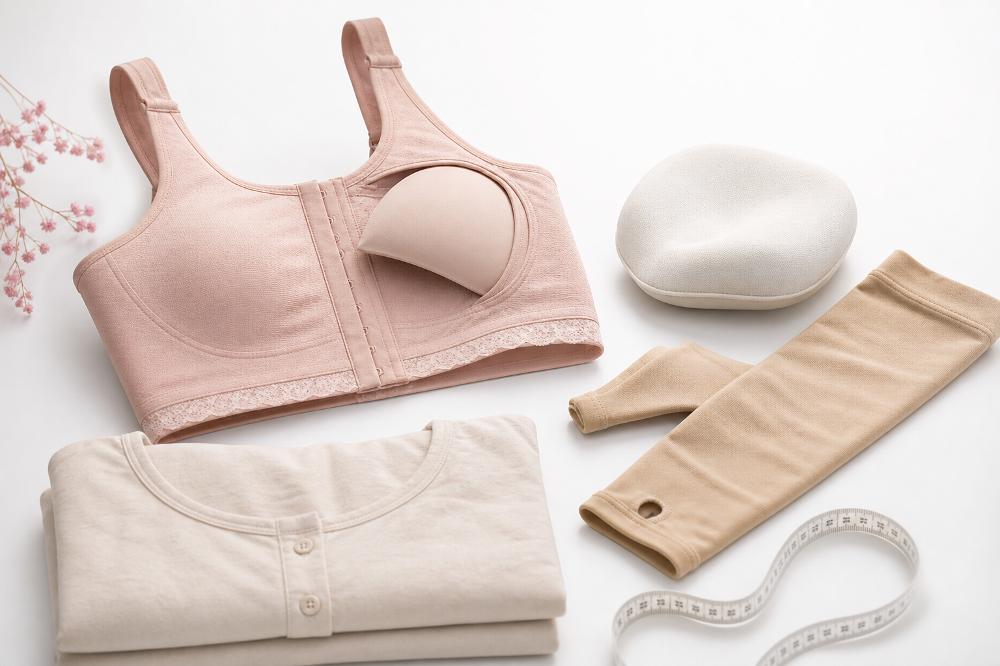
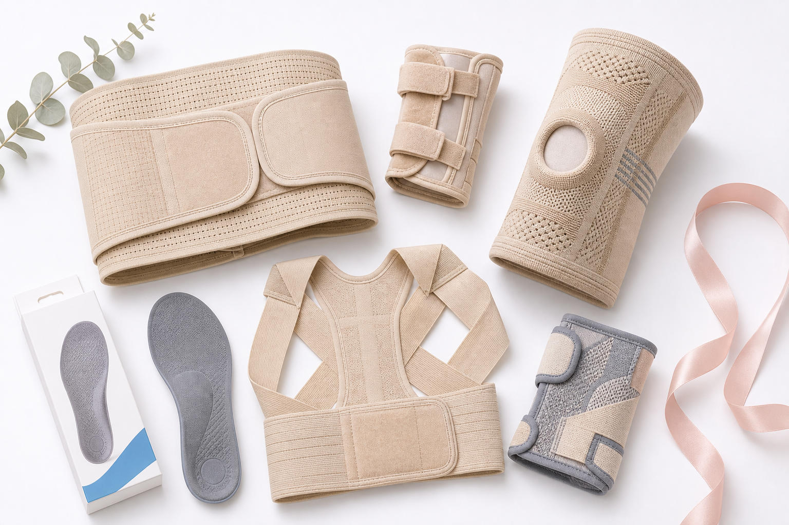
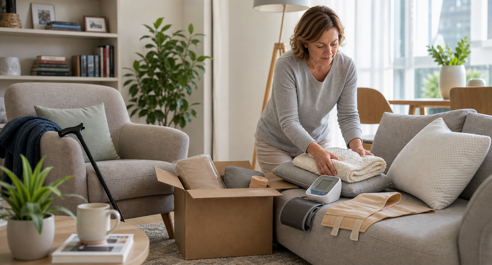
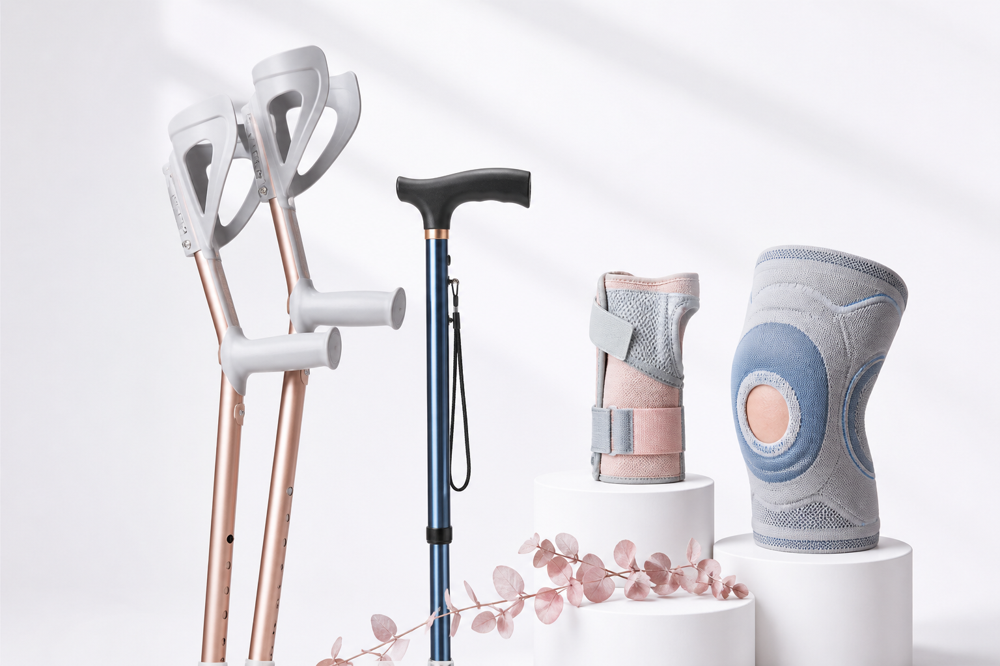
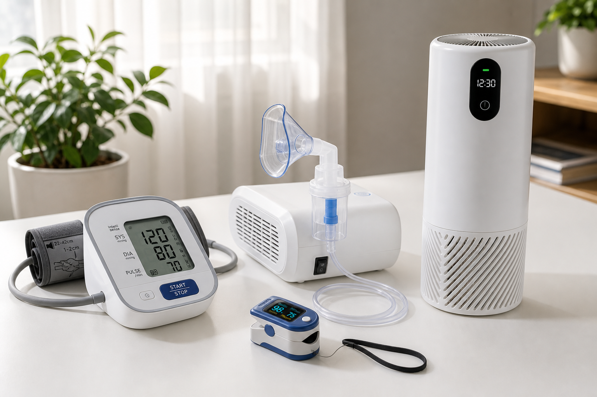
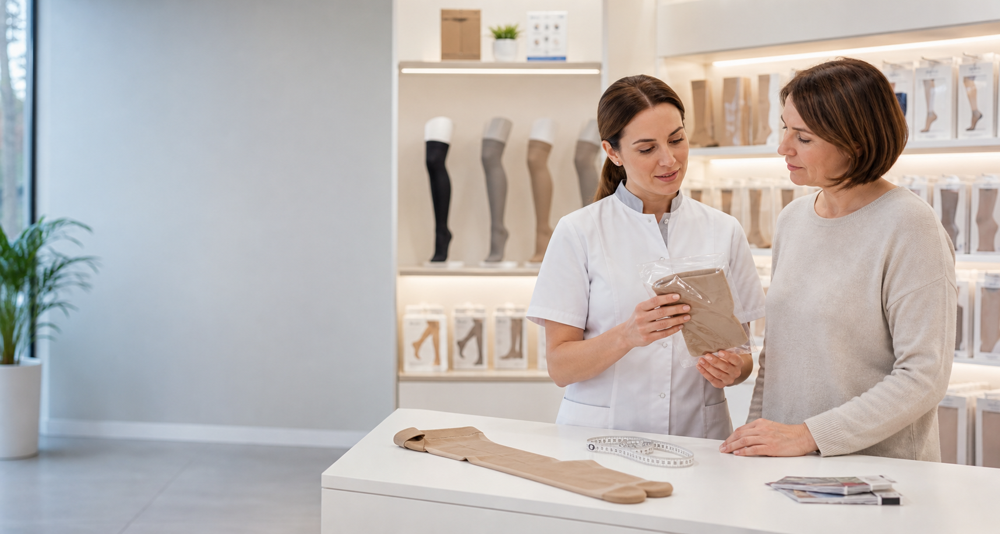
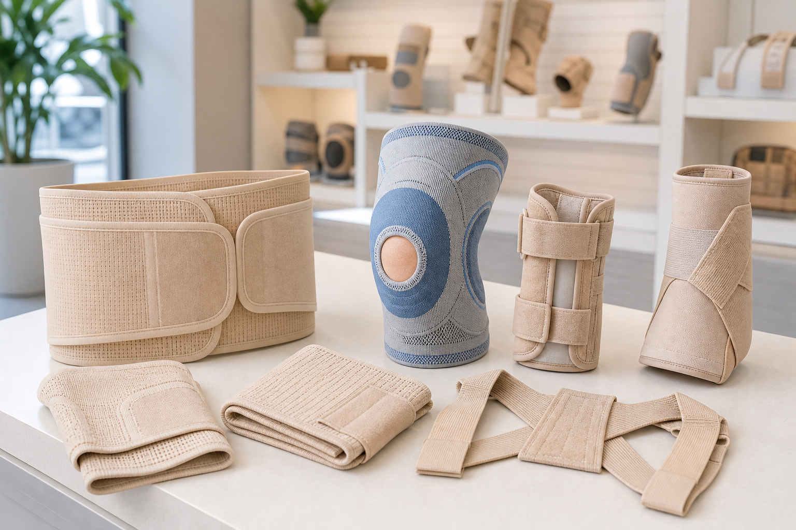

Компрессия перед операцией
Чулки, гольфы перед хирургией. Подбор класса компрессии и размера по рецепту — звонком за 5 минут.
ОткрытьВыберите свою ситуацию — покажем, что именно нужно, поможем с размером и отложим товар до вашего приезда.

Чулки, гольфы перед хирургией. Подбор класса компрессии и размера по рецепту — звонком за 5 минут.
Открыть
Товары после мастэктомии: бельё, рукава, экзопротезы. Спокойно подскажем, что нужно сейчас, а что можно докупить позже.
Открыть
После операций и травм: спина, колено, кисть, живот. Поможем понять, какой ортез или бандаж смотреть под вашу задачу.
Открыть
Если выписка на носу — соберём набор под ситуацию: компрессия, бандаж, домашний контроль и уход.
Открыть
Для лежачего больного или длительной реабилитации: противопролежневые системы, расходники, уход.
Открыть
Тонометры, пульсоксиметры, небулайзеры, рециркуляторы — для домашнего контроля и профилактики.
ОткрытьТо, что чаще всего покупают — с реальными фото, ценами и информацией о наличии.

Чулки, гольфы, рукава с помощью по размеру и посадке.
от 1 900 ₽ В наличии
Белье, рукава и мягкие товары для восстановления.
от 2 400 ₽ В наличии
Поддержка спины, колена, кисти после операций и нагрузок.
от 1 200 ₽ В наличииСразу скажем, подходит ли товар под сертификат, нужна ли карта «Мир» и какая будет доплата, если суммы сертификата не хватает.
Проверяем, можно ли оплатить нужный товар сертификатом.
Объясняем, что нужно для оплаты и как пройдет покупка.
Если сертификата не хватает, сразу считаем доплату.
Понятно объясним условия гарантии и останемся на связи после покупки.
Отправим домой, в клинику или в пункт выдачи и заранее подтвердим заказ.
Карта, наличные или перевод — без сюрпризов на этапе оформления.
Если нужны документы, всё подготовим и объясним заранее, без путаницы.
Отзывы разбиты по ситуациям: перед операцией, после выписки, восстановление дома.
Напишите в мессенджер или позвоните — ответим быстро и предложим 2–3 подходящих варианта под вашу задачу.